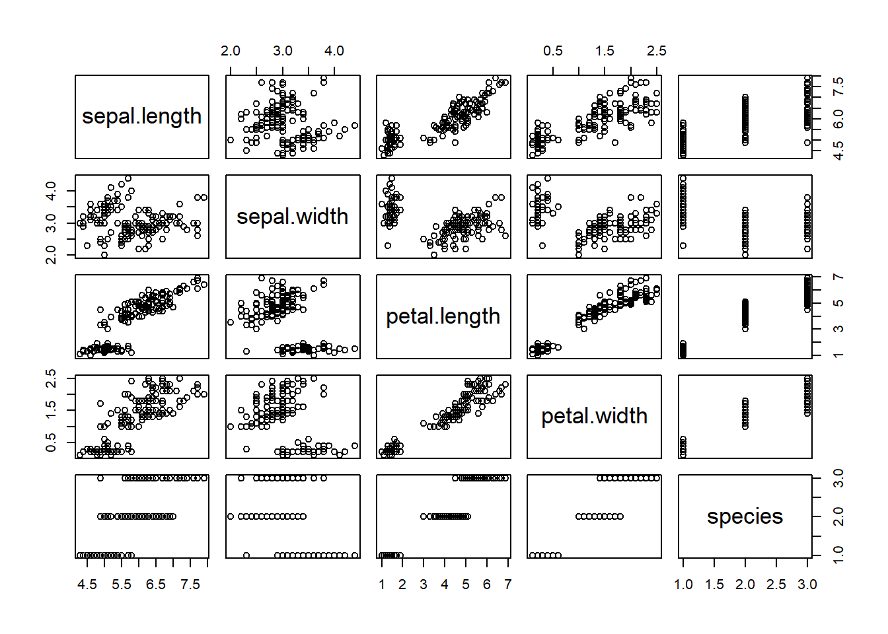
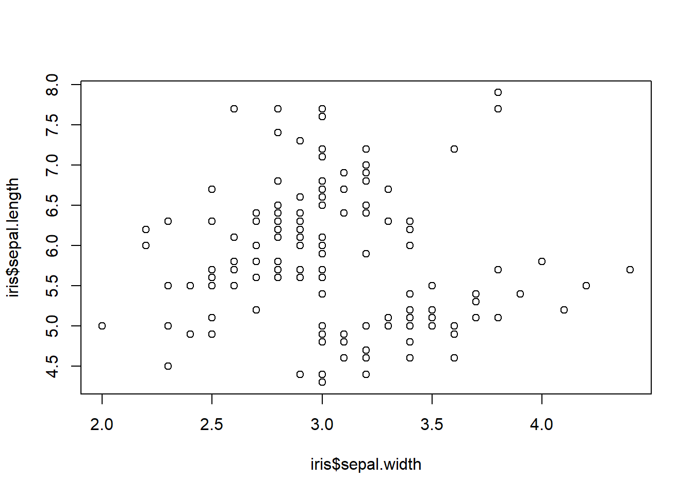
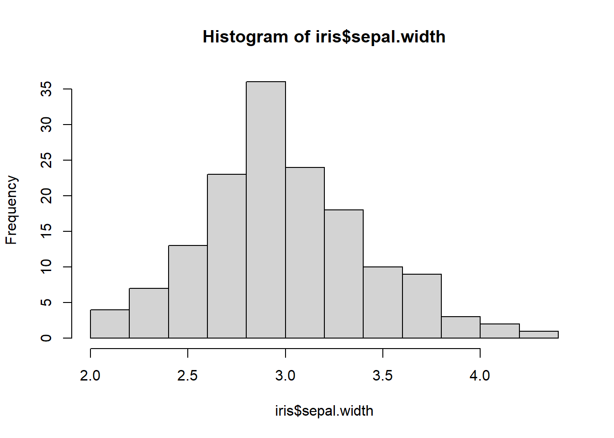

Based on the Rpubs tutorial found at https://rpubs.com/moeransm/intro-iris
Introduction
Numerous guides have been written on the exploration of this widely known dataset. Iris, introduced by Ronald Fisher in his 1936 paper The use of multiple measurements in taxonomic problems, contains three plant species (setosa, virginica, versicolor) and four features measured for each sample. These quantify the morphologic variation of the iris flower in its three species, all measurements given in centimeters.
Any comments within our code have to be preceded by the pound sign to notify the compiler to ignore them. # comments appear like this in code
Load the iris dataset
Show the code
# The datasets package needs to be loaded to access our data # For a full list of these datasets, type library(help = "datasets")library(datasets)data(iris)summary(iris)
Sepal.Length Sepal.Width Petal.Length Petal.Width
Min. :4.300 Min. :2.000 Min. :1.000 Min. :0.100
1st Qu.:5.100 1st Qu.:2.800 1st Qu.:1.600 1st Qu.:0.300
Median :5.800 Median :3.000 Median :4.350 Median :1.300
Mean :5.843 Mean :3.057 Mean :3.758 Mean :1.199
3rd Qu.:6.400 3rd Qu.:3.300 3rd Qu.:5.100 3rd Qu.:1.800
Max. :7.900 Max. :4.400 Max. :6.900 Max. :2.500
Species
setosa :50
versicolor:50
virginica :50
Tip
The summary() function gives summary statistics for any dataset. It can also be called on one variable instead of on the whole dataset. Try summary(iris$Sepal.Length) and compare that with the above summaries.
Alternatively, you may only want to know the column names of your dataset, in which case you can use names(NameOfdataset), which in our case would look like names(iris). Also notice that each coloumn name in the iris dataset has some upper case letters, which might be inconvenient to work with. You can then call the tolower() function on names(iris) to make this change. For those who might prefer upper case column names, the toupper() function will instead, be useful.
Written packages make it easier to work with datasets than regular baseR functions. They have been optimized to be faster and more intuitive than baseR functions, therefore reducing the steepness of the R learning curve. Let’s take a look;
The dplyr package
Use install.packages("dplyr") in your console to install this package. Note that you must be connected to the internet. If you’ve opened a new R script file, you will need to use the keys CTRL+Enter [PC] or Cmd+Enter [Mac] to run the commands.
filter()
Show the code
names(iris) <-tolower(names(iris))library(dplyr)
Attaching package: 'dplyr'
The following objects are masked from 'package:stats':
filter, lag
The following objects are masked from 'package:base':
intersect, setdiff, setequal, union
Show the code
# filter() the data for species virginicavirginica <-filter(iris, species =="virginica")head(virginica) # This dispalys the first six rows
Notice that we use the logical double equal sign as in species == "virginica", and quotations around virginica since this value is of a char (character) data type. The equivalent base command for filter() would be subset(), with all the inner arguments being exactly the same. We can also filter for multiple conditions within our function.
Show the code
sepalLength6 <-filter(iris, species =="virginica", sepal.length >6)tail(sepalLength6) # compare this to head()
The syntax for using subset() would be subset(iris, species == "virginica" & sepal.length > 6) and using <- to assign it to a variable of your choice, which in our case is sepalLength6
select()
This function selects data by column name. You can select any number of columns in a few different ways.
Show the code
# select() the specified columnsselected <-select(iris, sepal.length, sepal.width, petal.length)# select all columns from sepal.length to petal.lengthselected2 <-select(iris, sepal.length:petal.length)head(selected, 3)
# selected and selected2 are exactly the sameidentical(selected, selected2)
[1] TRUE
mutate()
Create new columns using this function
Show the code
# create a new column that stores logical values for sepal.width greater than half of sepal.lengthnewCol <-mutate(iris, greater.half = sepal.width >0.5* sepal.length)tail(newCol)
# The chain operator, or the pipeline %>%# This will first filter, and then arrange our data. Note that here the order in which you call functions does not matter, but in other cases it mightarr.virg <- newCol %>%filter(species =="virginica") %>%arrange(sepal.width)arr.virg[30:35,] # will show us rows 30 through 35 and all columns
# You can also arrange in descending order using desc() on what you arrange by# arrange(desc(sepal.width))# summarise()summarise(arr.virg, mean.length =mean(sepal.length, na.rm =TRUE))
mean.length
1 6.588
This is the mean sepal.length for the virginica species. Challenge2: The standard deviation gives how much individual values vary from the mean. Find the standard deviation of sepal.length using summarise() and sd()
Show the code
summarise(iris, sd(sepal.length))
sd(sepal.length)
1 0.8280661
Visualization
Any powerful analysis will visualize the data to give a better picture (wink wink) of the data. Below is a general plot of the iris dataset:
Show the code
plot(iris)

If we’re looking to plot specific variables, we can use plot(x,y) where x and y are the variables we’re interested in. hist() is another useful function
Show the code
# use ?plot to read more about other argumentsplot(iris$sepal.width, iris$sepal.length)

Show the code
# ?hist will give you details on more argumentshist(iris$sepal.width)

Notice that in flowers with greater sepal widths tend to have shorter sepal lengths.